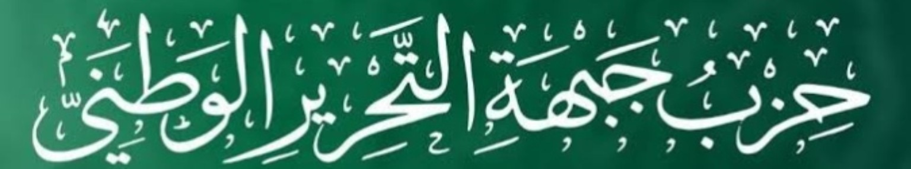
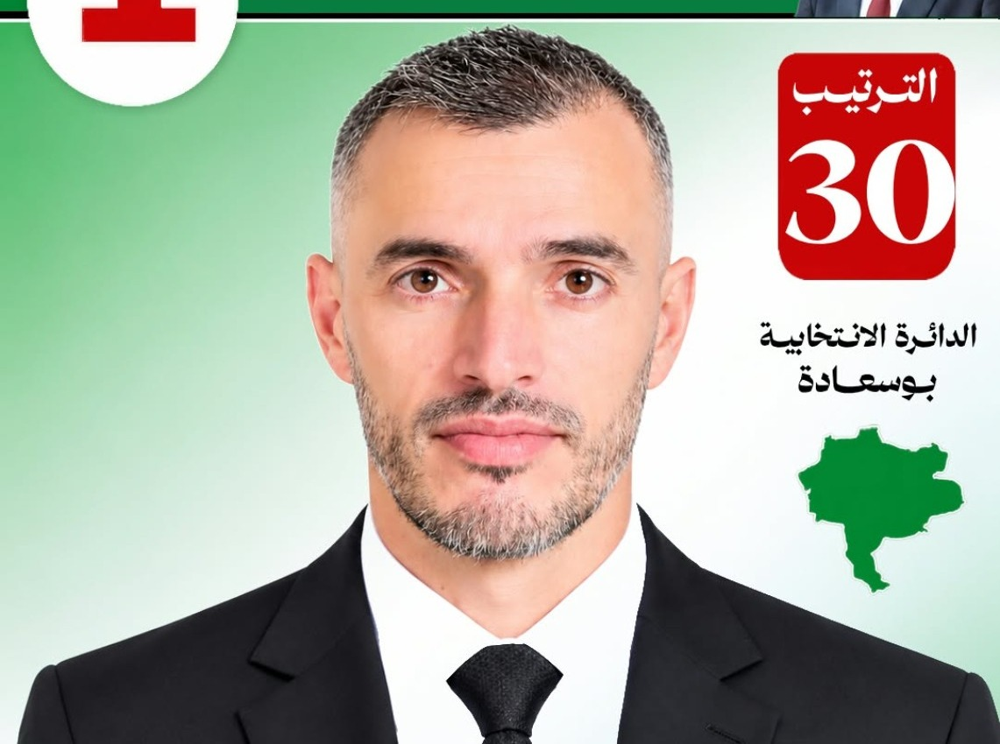
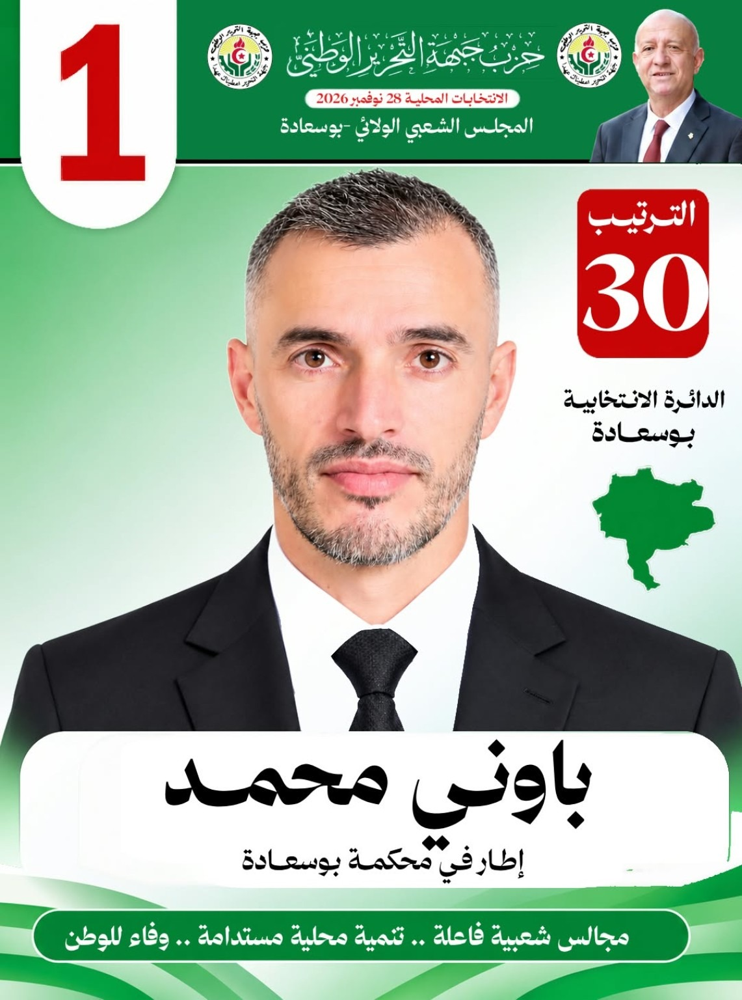

⚖️
إطار بمحكمة بوسعادة
المسار المهني كما ورد في المعلومات المقدمة.

إطار بمحكمة بوسعادة
مترشح لانتخابات المجلس الشعبي الولائي
28 نوفمبر 2026 · الدائرة الانتخابية بوسعادة

المسار المهني كما ورد في المعلومات المقدمة.
شهادة ليسانس في الحقوق.
شهادة ليسانس في الأدب.
شهادة ليسانس في الفلسفة.
بوسعادة · ولاية المسيلة.
39 ضمن القائمة رقم 1.
«الحديث قياس»
العبارة التي اخترتم اعتمادها عنواناً مميزاً للموقع.
انتخابات المجلس الشعبي الولائي
الدائرة الانتخابية: بوسعادة
تاريخ الانتخابات: 28 نوفمبر 2026
المترشح: محمد باوني · الترتيب: 39 · القائمة: 1

هذه الصفحة مخصصة للتعريف بالمترشح ومساره العلمي والمهني والاستحقاق الانتخابي.
يمكن إضافة رقم الهاتف، صفحة فيسبوك، البريد الإلكتروني ومعلومات الاتصال عند توفيرها.